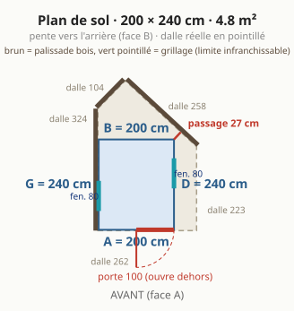
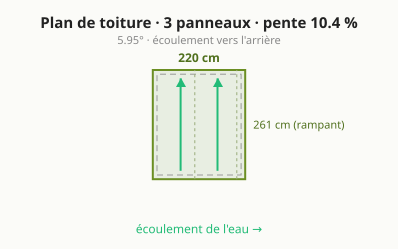
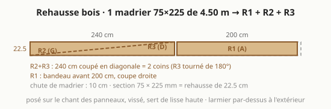
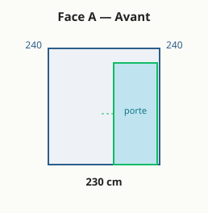
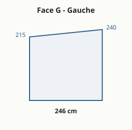
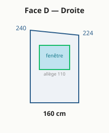
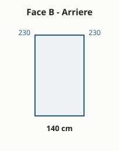

🏡 Abri de jardin — panneaux sandwich
Conception paramétrique, spec-first et auto-documentée d'un petit abri / bureau de jardin (2,00 × 2,40 m, 4,8 m²) rectangulaire, murs et toit en panneaux sandwich 60 mm autoportants (pas d'ossature), sur une dalle béton déjà coulée.
Ce dépôt contient tout le nécessaire : plans cotés, débit matière, liste d'achats, cahier de montage en 6 étapes et points de vigilance — le tout généré depuis un fichier de paramètres unique et publié sur un petit site web.
🌐 Site en ligne : https://rvion.github.io/screenplay/ · 🧠 Spécification : dossier
agent/· ⚙️ Paramètres :params.json
Le principe, en une phrase
Une boîte rectangulaire dont tous les panneaux de mur sont des rectangles identiques (coupes droites) ; la pente du toit vient d'une rehausse en bois posée dessus : un madrier coupé en diagonale (deux coins, faces gauche et droite) et un madrier droit sur la face avant, qui font aussi lisse haute. Une seule coupe en biais dans tout le projet. Un bloc-porte vitré et deux fenêtres (ouvrante à droite, fixe à gauche), chacune dans un seul panneau. Objectif : simple, abordable, robuste, agréable tous les jours.
| Emprise | 200 × 240 cm = 4,8 m² (projection toit compris 5,2 m², qui ne compte pas dans l'emprise au sol) · 4 faces : A avant · D droite · B arrière · G gauche · on peut en faire le tour |
| Panneaux | sandwich 60 mm autoportants, âme PIR, fixation cachée, pose verticale, 9 panneaux de 215 cm (le module A2 est pris par le bloc-porte) |
| Rehausse | 1 madrier 75 × 225 de 4,8 m : 240 coupé en diagonale (2 coins) + 200 droit ; sert de lisse haute |
| Toit | mono-pente vers l'arrière, rehausse 22,5 cm (≈ 9,4 %, 5,4°), 2 panneaux toiture entiers de ~2,61 m, couleur claire, rives affleurantes |
| Porte | bloc-porte vitré 100 × 215 (dormant compris), face A à droite : remplace le panneau A2, rien à découper |
| Fenêtres | 2 × 80 × 110, allège 95 : ouvrante face D (module D2), fixe face G (module G2) |
| Aménagement | plancher isolé, multiprise + éclairage (câble déjà en place), chauffage, store, finitions : ~570 € |
| Budget | ≈ 3 900 € HT (coque ~3 340 € + aménagement ~570 €), fourchette 3 300 – 4 500 € |
| Dalle | existante, pentagone à pointe arrière relevé au mètre : 262 devant, 223 à droite, 324 à gauche, pans arrière 104 et 258 ; le côté gauche et le fond longent le mur de propriété ; l'abri longe le mur gauche et garde une bande de passage vers l'arrière |
| Usage | bureau / pièce à vivre, chauffé toute l'année (ventilation obligatoire) |
Plans
| Plan de sol | Plan de toiture |
|---|---|
 |
 |

| Face A — Avant | Face G — Gauche |
|---|---|
 |
 |
| Face D — Droite (fenêtre) | Face B — Arrière |
|---|---|
 |
 |
(Le modèle 3D interactif est sur le site : dalle réelle, joints de panneaux, porte, toit.)
Comment ça marche (paramétrique)
Le site est interactif : quelques réglages (emprise, hauteur des murs, rehausse, porte, fenêtres, largeur utile) recalculent tout en direct — KPIs, débit, plans SVG cotés, budget et modèle 3D. Pas besoin de rien lancer pour explorer : ouvre simplement le site.
Pour le développement / régénérer les artefacts versionnés :
npm ci # esbuild + typescript + jsdom (dev)
$EDITOR params.json # éditer les cotes par défaut
npm run build && npm run emit # bundle l'app + regénère params.js, SVG, derived.json
npm run test:raw # snapshots golden + smoke DOM
npm run site # prévisualiser sur http://localhost:5885 (ou ouvrir site/index.html)
Toute la logique vit dans site/src/compute.ts (géométrie, débit,
plans SVG, budget, 3D) — pur, donc partagé entre le navigateur, le CLI Node et les tests.
Les cotes par défaut vivent dans params.json. Aucune cote n'est écrite à
la main ailleurs. La 3D utilise Three.js via CDN.
Structure du dépôt
params.json ← cotes par défaut (source unique des dimensions, en cm)
site/src/ ← app TypeScript : compute (logique) + viewer/render/controls/main
site/ ← site GitHub Pages (index.html + app.js bundlé + params.js + plans)
tests/ ← snapshots golden (compute) + smoke DOM (jsdom)
agent/ ← spécification spec-first (voir CLAUDE.md → agent/index.md)
.github/workflows/ ← build TS + tests + déploiement automatique de Pages
La conception détaillée vit dans agent/ :
vision · besoins ·
spécification · décisions ·
géométrie · pipeline ·
backlog.
⚠️ Points de vigilance (résumé)
- Dalle : relevée au mètre (5 longueurs) ; la dalle et la position de l'abri se règlent sur le site, qui affiche en direct toute partie de l'emprise hors dalle.
- Seuil des 5 m² : emprise au sol = emprise des murs (4,8 m²). D'après l'article R*420-1 du Code de l'urbanisme, les débords de toiture sont exclus de l'emprise au sol tant qu'ils ne sont pas soutenus par des poteaux, piliers ou encorbellements. Jusqu'à 5 m² d'emprise au sol et de surface de plancher : aucune formalité ; de 5 à 20 m² : déclaration préalable. Réserves : secteur protégé ou abords d'un monument historique (déclaration préalable quand même), et le PLU.
- Portée du toit ≈ 2,6 m en 60 mm sans panne : vérifier le tableau de portées du fabricant (neige/vent), sinon ajouter une panne.
- Pente du toit : 22,5 cm ≈ 9,4 % (5,4°). Vérifier la pente mini du fabricant.
- Chaleur d'été : toit clair, fenêtre ouvrante face à la porte, store sur le vitrage exposé.
- Condensation (usage chauffé) : parements acier = pare-vapeur ⇒ risque aux ponts thermiques (dont le joint mur/rehausse). Ventilation indispensable.
- Porte et fenêtre : double vitrage performant (le vitrage déperd 4 à 5 fois plus que le panneau), fenêtre dans un seul panneau, débattement et arrêt de porte, étanchéité du seuil ; gouttière arrière + descente loin de la dalle.
Publier le site (GitHub Pages)
Pages est sur Source = GitHub Actions ; le workflow
pages.yml régénère et redéploie site/ à chaque push sur la
branche par défaut. Site : https://rvion.github.io/screenplay/.